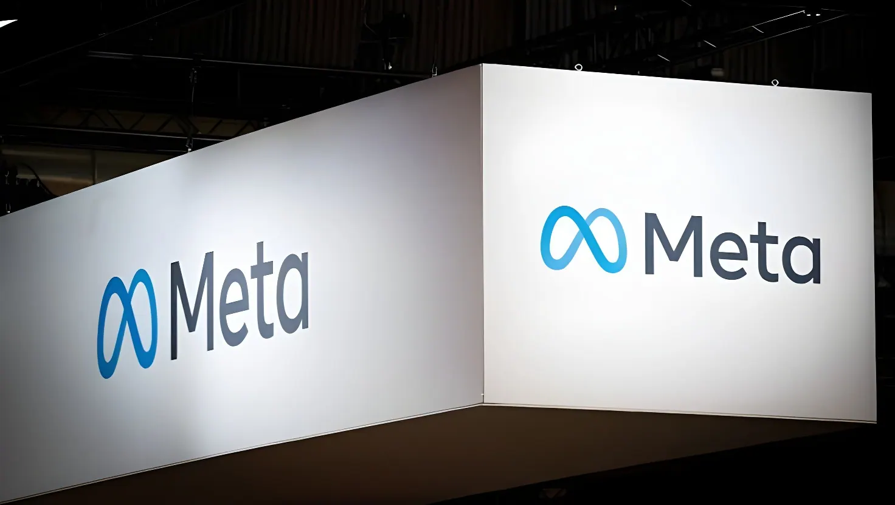

Le 26 août 2026, en pleine deuxième semaine d'un procès fédéral inédit à Oakland, Meta a annoncé un accord avec une large coalition d'États américains qui l'accusaient d'avoir sciemment rendu Instagram et Facebook addictifs pour les mineurs. Le groupe de Mark Zuckerberg accepte de verser jusqu'à 17 milliards de dollars sur dix ans et de transformer ses applications, évitant ainsi la comparution de son PDG et un jugement qui aurait pu se chiffrer en dizaines de milliards de dollars.
Le litige trouve son origine dans une plainte fédérale déposée en octobre 2023 devant le tribunal du district nord de Californie, à Oakland, par une coalition bipartisane menée par la Californie, alors rejointe par une trentaine d'autres États. Le dossier, consolidé en un contentieux multi-juridictions confié à la juge Yvonne Gonzalez Rogers, accusait Meta d'avoir sciemment conçu Instagram et Facebook pour maximiser le temps d'écran des mineurs, de leur avoir causé des préjudices psychologiques et physiques, et d'avoir enfreint le COPPA en collectant les données d'enfants de moins de 13 ans. Après le rejet, fin 2024, d'une tentative de Meta de faire annuler la procédure, le procès s'est ouvert le 18 août 2026 à Oakland, avec des dommages réclamés par les États pouvant atteindre 200 milliards de dollars.
Le procès, censé durer jusqu'à début octobre, n'en était qu'à sa deuxième semaine lorsque l'accord a été annoncé. Les juges avaient déjà entendu le lanceur d'alerte Arturo Béjar, ancien ingénieur de Meta, ainsi que le patron d'Instagram Adam Mosseri, interrogé sur l'efficacité réelle des outils de contrôle du temps d'écran. Mark Zuckerberg lui-même devait être appelé à témoigner dans les semaines suivantes ; le règlement du dossier lui a évité cette étape.
Selon l'accord, dont les modalités ont été détaillées par le bureau du procureur général de Californie, Rob Bonta, Meta versera environ 12,7 milliards de dollars (70 % du total) aux États participants sur dix ans, quoi qu'il arrive. Les 5,3 milliards de dollars restants (30 %) ne seront dus que si YouTube et TikTok adoptent des mesures de protection équivalentes pour leurs jeunes utilisateurs — une clause conçue pour pousser l'ensemble du secteur à s'aligner. Meta a indiqué prévoir une charge comptable d'environ 10 milliards de dollars dès le troisième trimestre 2026 au titre de cet accord, dont le paiement s'étale sur une décennie.
Au-delà du volet financier, Meta s'engage à instaurer, par défaut, une limite de deux heures d'utilisation quotidienne pour les moins de 18 ans et un blocage nocturne entre minuit et 6 heures, l'un et l'autre modifiables uniquement par un parent, ainsi que la suppression de l'affichage du nombre de « likes » et l'interdiction des filtres de chirurgie esthétique pour les mineurs. Un flux « non personnalisé », sans ciblage algorithmique, devra aussi être proposé aux jeunes utilisateurs, sous le contrôle d'un auditeur indépendant disposant d'un accès étendu aux données de l'entreprise.
Une coalition d'États, menée par la Californie, dépose à Oakland une plainte fédérale accusant Meta d'avoir rendu Instagram et Facebook addictifs pour les jeunes.
La juge Yvonne Gonzalez Rogers rejette la demande de Meta visant à faire annuler la procédure.
Dans une affaire distincte, un jury du Nouveau-Mexique condamne Meta à 375 millions de dollars pour avoir mis en danger des mineurs.
Un juge du Nouveau-Mexique ordonne à Meta de verser 567 millions de dollars supplémentaires à un fonds de réparation.
Ouverture, à Oakland, du procès fédéral réunissant des dizaines d'États contre Meta.
Meta annonce un accord pouvant atteindre 17 milliards de dollars, validé le jour même par la juge.
L'accord met fin au procès le plus emblématique de la vague de plaintes visant les réseaux sociaux pour leurs effets sur la santé mentale des jeunes, souvent comparée aux procès contre l'industrie du tabac dans les années 1990. Mais pour Meta, dont le bénéfice net avoisinait 16 milliards de dollars au dernier trimestre, la note reste, selon des juristes spécialisés, plus embarrassante que réellement dissuasive. Des milliers de plaintes individuelles de familles, ainsi que des procédures distinctes contre TikTok, YouTube et Snap, restent pendantes devant d'autres tribunaux, certaines devant être jugées en Californie dès octobre 2026 — preuve que la pression judiciaire sur les plateformes concernant la protection des mineurs en ligne ne fait que commencer.
On August 26, 2026, midway through the second week of an unprecedented federal trial in Oakland, Meta announced a settlement with a broad coalition of U.S. states that had accused it of knowingly designing Instagram and Facebook to be addictive to minors. Mark Zuckerberg's company agreed to pay up to $17 billion over ten years and overhaul its apps, avoiding both its CEO's testimony and a verdict that could have run into the tens of billions of dollars.
The dispute traces back to a federal complaint filed in October 2023 in the U.S. District Court for the Northern District of California, in Oakland, by a bipartisan coalition led by California and eventually joined by roughly thirty other states. Consolidated into a multidistrict litigation before Judge Yvonne Gonzalez Rogers, the case accused Meta of knowingly designing Instagram and Facebook to maximize minors' screen time, causing psychological and physical harm, and violating COPPA by collecting data from children under 13. After Meta's bid to have the case dismissed was rejected in late 2024, the trial opened in Oakland on August 18, 2026, with states seeking damages that could have reached $200 billion.
The trial, expected to run until early October, was only in its second week when the settlement was announced. Jurors had already heard from whistleblower Arturo Béjar, a former Meta engineer, as well as Instagram head Adam Mosseri, who was questioned about the real-world effectiveness of the app's screen-time tools. Mark Zuckerberg himself was expected to take the stand in the weeks that followed; the settlement spared him that step.
Under the terms detailed by California Attorney General Rob Bonta's office, Meta will pay roughly $12.7 billion (70% of the total) to participating states over ten years, regardless of what happens next. The remaining $5.3 billion (30%) is due only if YouTube and TikTok adopt equivalent safeguards for their own young users — a clause designed to push the wider industry to fall in line. Meta said it expects to book a legal expense of roughly $10 billion as early as the third quarter of 2026 tied to the agreement, even though payment is spread over a decade.
Beyond the financial terms, Meta committed to a default two-hour daily time limit for users under 18 and a nighttime block between midnight and 6 a.m., both changeable only by a parent, along with removing like counts and banning cosmetic-surgery filters for minors. A "non-personalized," non-algorithmic feed option must also be offered to young users, overseen by an independent auditor with expansive access to the company's data.
A coalition of states led by California files a federal complaint in Oakland accusing Meta of making Instagram and Facebook addictive to young users.
Judge Yvonne Gonzalez Rogers rejects Meta's bid to have the case dismissed.
In a separate case, a New Mexico jury orders Meta to pay $375 million for endangering minors.
A New Mexico judge orders Meta to pay a further $567 million into an abatement fund.
The federal trial brought by dozens of states against Meta opens in Oakland.
Meta announces a settlement worth up to $17 billion, approved the same day by the judge.
The settlement closes the most high-profile case in a wave of lawsuits over social media's effects on youth mental health, often compared to the tobacco litigation of the 1990s. But for Meta, whose net profit stood at roughly $16 billion last quarter, legal analysts note the bill looks more like an embarrassment than a genuine deterrent. Thousands of individual lawsuits from families, along with separate cases against TikTok, YouTube and Snap, remain pending in other courts, with some set for trial in California as early as October 2026 — a sign that legal pressure over child safety online is only just beginning.